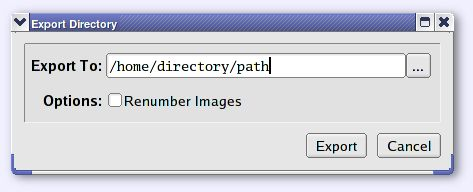
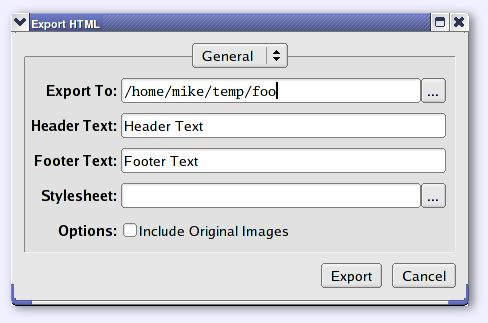
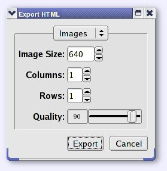
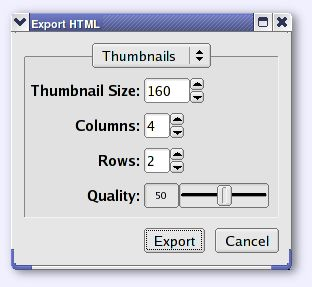
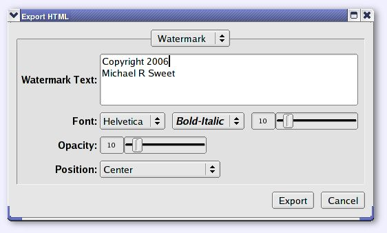

|
|
| flPhoto Copyright 2002-2006 by Michael Sweet |
|---|
The Export sub-menu provides access to all export-specific functions in flPhoto:
Choose Directory... to show the Export Directory window. After changing any fields in the dialog, click on Export to export the current album to a directory or URL, or Cancel to cancel the export.

Enter a directory or click on the ... button to select an output directory.
Check the Renumber Images box to export the images from "img00000.jpg" to "img99999.jpg".
The HTML export window is separated into four panes which can be chosen by clicking on the chooser at the top of the window.
Choose HTML... to show the Export HTML window. After changing any fields in the dialog, click on Export to export the current album to a directory or URL, or Cancel to cancel the export.

Enter a directory path or a URL ("http://foo/bar" or "ftp://foo/bar") to specify where to export the current photo album. Click on the ... button to select a directory using the file chooser.
Enter a line of text that will be used as the title and heading on each page that is exported.
Enter a line of text that will be used as the footer on each page that is exported.
Enter a stylesheet filename or click on the ... button to select a CSS file using the file chooser. Empty this field to use the standard stylesheet produced by flPhoto.
Check the Include Original Images box to include a copy of the original image files along with the exported images. The original files are available by clicking on the preview image.
Choose the Images pane to control the size, quality, and number of columns and rows worth of images that are shown for the normal resolution pages.

Enter the pixel size of images in the album, the number of columns and rows of images on each image page, and the JPEG quality setting for each image that is exported. The size value represents the maximum width and height of the image on the page.
Choose the Thumbnails pane to control the size, quality, and number of columns and rows worth of images that are shown for the thumbnail pages.

Enter the pixel size of thumbnails in the album, the number of columns and rows of thumbnails on each thumbnail page, and the JPEG quality setting for each thumbnail that is exported. The size value represents the maximum width and height of the thumbnail on the page.
Choose the Watermark pane to control the optional watermark that is added to all images.

Enter the text you would like to appear as a watermark over each thumbnail and image.
Select the typeface, style, and size of the watermark text as desired.
Drag the opacity from 0 (invisible watermark) to 100 (completely opaque watermark).
Choose the position of the watermark on each image.